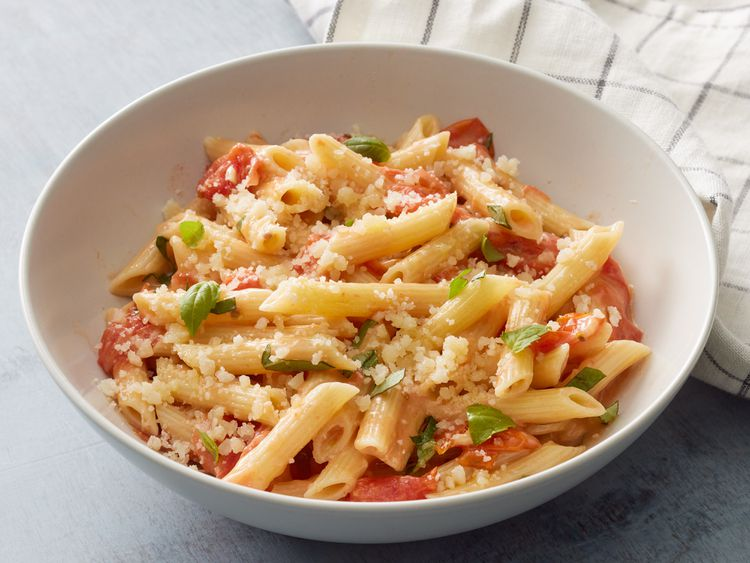

Tomato Basil Penne Pasta

"This penne pasta is a Mediterranean-style family staple. Use 2 tablespoons olive oil if basil oil is unavailable." —Elisa Stamm
Ingredients
- 1 (8 Ounce) package penne pasta
- 1 tablespoon basil oil
- 1 tablespoon olive oil
- 3 cloves garlic, minced
- 1 pint grape tomatoes, halved
- 1 cup shredded pepper Jack cheese
- 1 cup shredded mozzarella cheese
- 1/4 cup grated Parmesean cheese
- 1 tablespoon minced fresh basil
Steps
- Bring a large pot of lightly salted water to a boil. Add pasta and cook for 8 to 10 minutes or until al dente; drain.
- Heat basil oil and olive oil in a large skillet over medium heat. Add garlic and cook until fragrant, about 1 minute. Add tomatoes and cook until they begin to break down, about 5 minutes.
- Stir in pepper Jack cheese, mozzarella cheese, and Parmesan cheese. Cook, stirring occasionally, until cheeses are melted and bubbly, about 5 minutes.
- Stir in basil and pasta. Serve immediately.